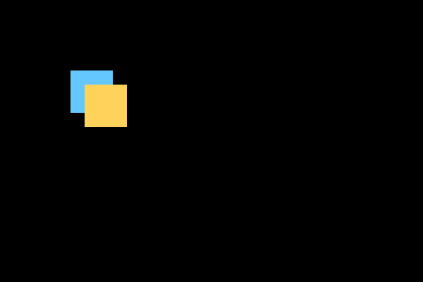
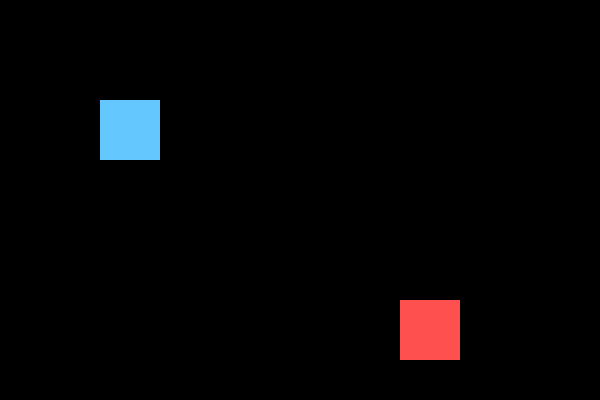
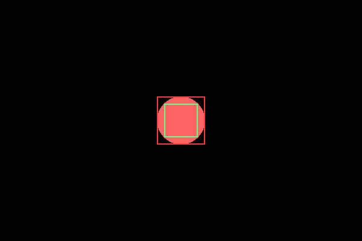

Столкновения и хитбоксы
colliderect() под капотом — четыре сравнения чисел, а хитбокс не обязан совпадать с видимой картинкой пиксель в пиксель.
Столкновение — момент, когда два игровых объекта пересекаются в пространстве, и игра
должна на это отреагировать: мяч отскакивает от стены, персонаж подбирает монету, снаряд
поражает врага. У pygame.Rect для этого есть готовый метод:
if igrok_rect.colliderect(vrag_rect):
print("Столкновение!")Как это устроено на самом деле
colliderect() проверяет пересечение двух прямоугольников,
выровненных по осям (AABB, axis-aligned bounding box) — метод, который под капотом сводится
к четырём простым сравнениям чисел:
def pryamougolniki_peresekayutsya(a, b):
ax1, ay1, aw, ah = a
bx1, by1, bw, bh = b
ax2, ay2 = ax1 + aw, ay1 + ah
bx2, by2 = bx1 + bw, by1 + bh
return ax1 < bx2 and ax2 > bx1 and ay1 < by2 and ay2 > by1Два прямоугольника не пересекаются, если один полностью левее, правее, выше или ниже другого — проверка выше как раз убеждается, что ни одно из этих четырёх условий не выполняется.


Хитбокс — не всегда то же самое, что рисунок
«Хитбокс» — прямоугольник (или другая фигура), который используется именно для проверки столкновений, и он не обязан по размеру совпадать с видимым рисунком персонажа один в один. У круглого мяча с прозрачными краями изображение обычно квадратное — если считать столкновение по полному квадрату изображения, игрок будет видеть несправедливые «попадания мимо» там, где на глаз ничего не коснулось.
Rect берут напрямую из размера всего загруженного изображения, включая прозрачные поля вокруг самого персонажа. Решение — уменьшить хитбокс относительно видимой картинки через rect.inflate(-20, -20): inflate() меняет общий размер прямоугольника, сохраняя центр, поэтому -20 по ширине и высоте убирает ровно по 10 пикселей с каждой стороны, а не 20. Конкретный отступ подбирают на глаз под каждый спрайт.